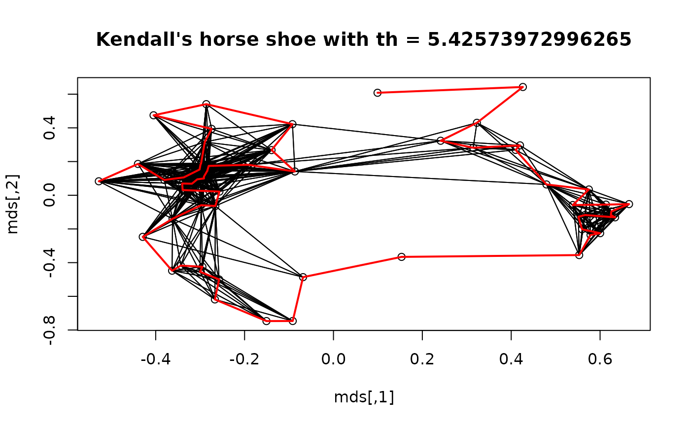

This data set contains a grave times artifact incidence matrix for the Celtic Münsingen-Rain cemetery in Switzerland as provided by Hodson (1968) and published by Kendall 1971.
Format
A 59 x 70 0-1 matrix. Rows (graves) and columns (artifacts) are in the order determined by Hodson (1968).
References
Hodson, F.R. (1968). The La Tene Cemetery at Münsingen-Rain, Stämpfli, Bern.
Kendall, D.G. (1971): Seriation from abundance matrices. In: Hodson, F.R., Kendall, D.G. and Tautu, P., (Editors), Mathematics in the Archaeological and Historical Sciences, Edinburgh University Press, Edinburgh, 215–232.
See also
Other data:
Chameleon,
Irish,
Psych24,
SupremeCourt,
Townships,
Wood,
Zoo,
create_lines_data(),
is.robinson()
Examples
data("Munsingen")
## Seriation method after Kendall (1971)
## Kendall's square symmetric matrix S and SoS
S <- function(x, w = 1) {
sij <- function(i , j) w * sum(pmin(x[i,], x[j,]))
h <- nrow(x)
r <- matrix(ncol = h, nrow =h)
for(i in 1:h) for (j in 1:h) r[i,j] <- sij(i,j)
r
}
SoS <- function(x) S(S(x))
## Kendall's horse shoe (Hamiltonian arc)
horse_shoe_plot <- function(mds, sigma, threshold = mean(sigma), ...) {
plot(mds, main = paste("Kendall's horse shoe with th =", threshold), ...)
l <- which(sigma > threshold, arr.ind=TRUE)
for(i in 1:nrow(l)) lines(rbind(mds[l[i,1],], mds[l[i,2],]))
}
## shuffle data
x <- Munsingen[sample(nrow(Munsingen)),]
## calculate matrix and do isoMDS (from package MASS)
sigma <- SoS(x)
library("MASS")
mds <- isoMDS(1/(1+sigma))$points
#> initial value 21.862779
#> iter 5 value 15.918885
#> iter 10 value 15.609393
#> iter 10 value 15.600691
#> iter 10 value 15.597381
#> final value 15.597381
#> converged
## plot Kendall's horse shoe
horse_shoe_plot(mds, sigma)
## find order using a TSP
library("TSP")
tour <- solve_TSP(insert_dummy(TSP(dist(mds)), label = "cut"),
method = "2-opt", control = list(rep = 15))
#> Warning: executing %dopar% sequentially: no parallel backend registered
tour <- cut_tour(tour, "cut")
lines(mds[tour,], col = "red", lwd = 2)

## create and plot order
order <- ser_permutation(tour, 1:ncol(x))
bertinplot(x, order, options= list(panel=panel.circles,
rev = TRUE))
#> Warning: eval(expr, envir): Unknown control parameter(s) ‘options’ are ignored. Rerun with verbose = TRUE.
## compare criterion values
rbind(
random = criterion(x),
reordered = criterion(x, order),
Hodson = criterion(Munsingen)
)
#> Cor_R ME Moore_stress Neumann_stress
#> random -0.01319356 143 3484 1556
#> reordered -0.44671351 226 2738 1258
#> Hodson 0.94236369 239 2574 1206